GALERI FOTO
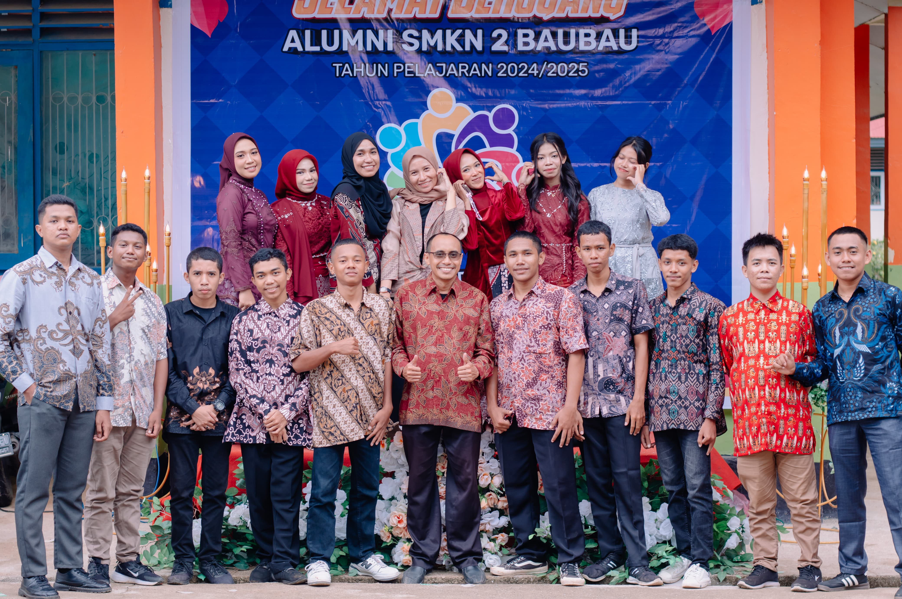
Hari Kelulusan

Hari Kelulusan
Foto Seangkatan
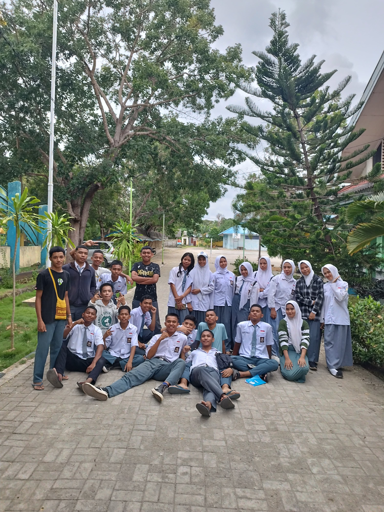
Pengambilan Foto Ijasah
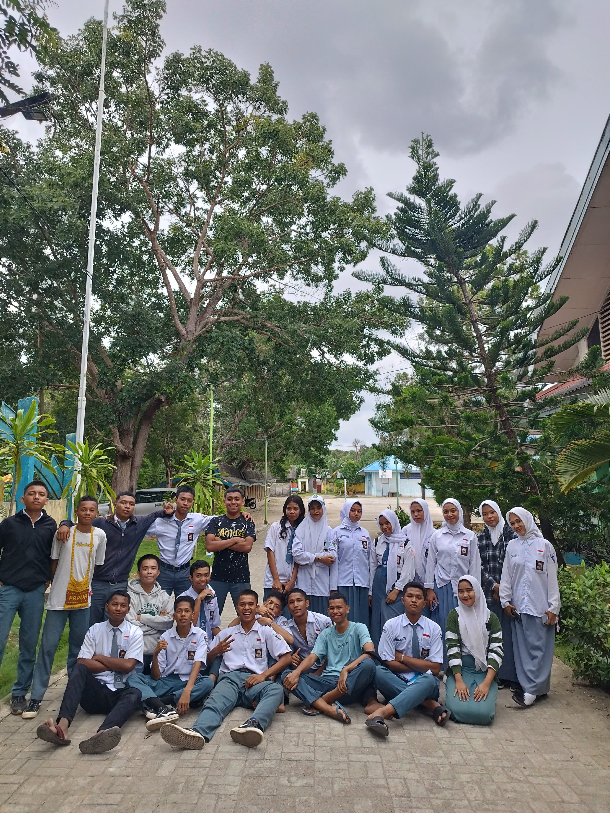
Pengambilan Foto Ijasah
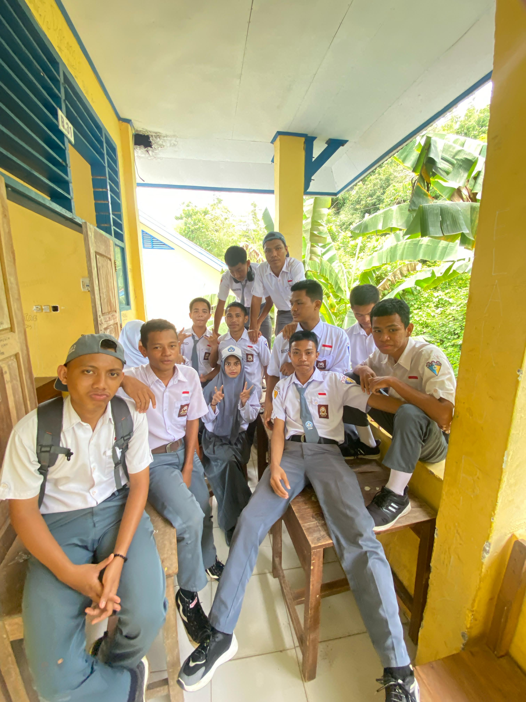
Sebelum Kelulusan
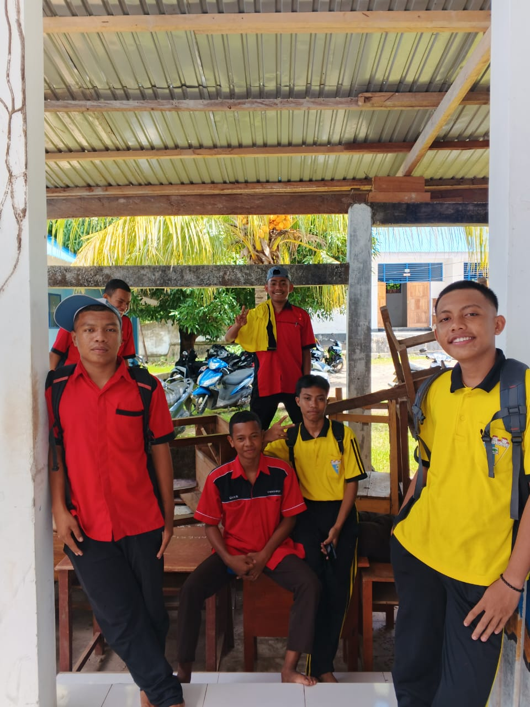
Setelah UKK
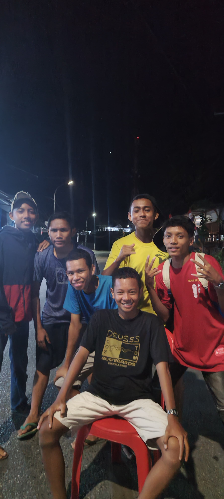
H-1 Sebelum PKL
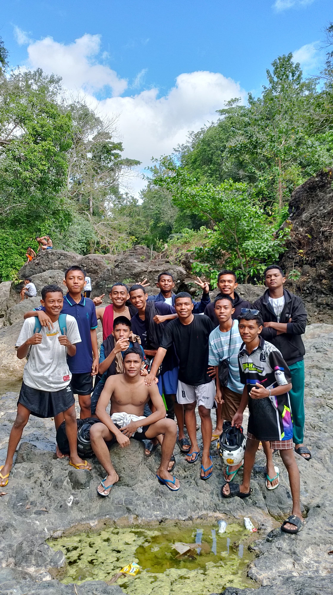
Jalan-jalan Sebelum PKL
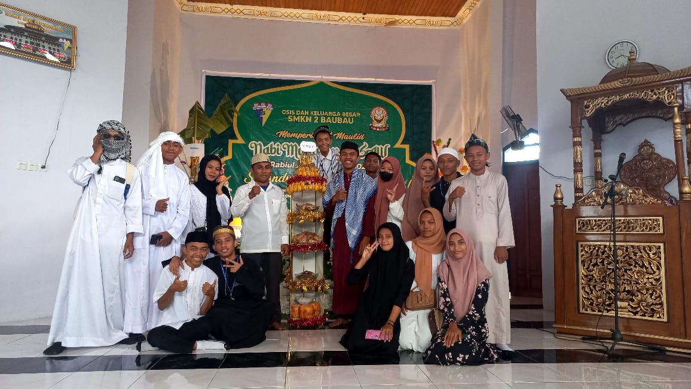
Maulid Nabi
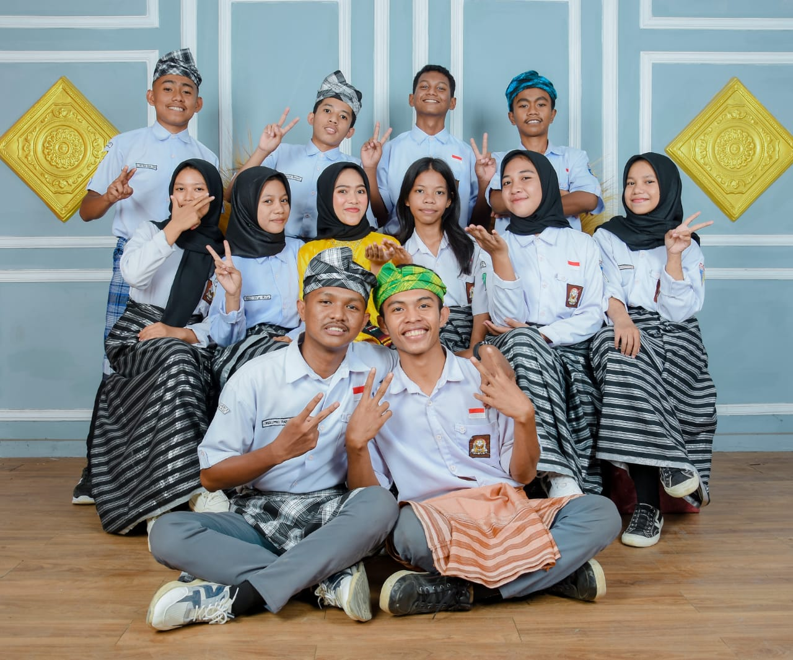
Setelah Upacara Hari Pahlawan
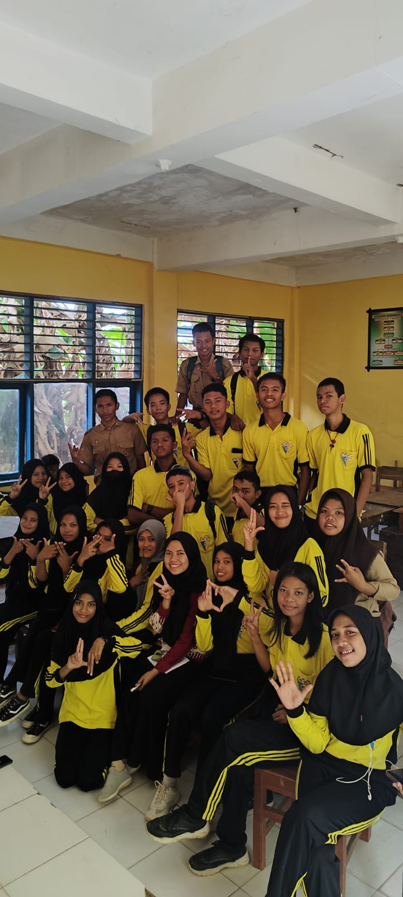
Simulasi Pemilihan
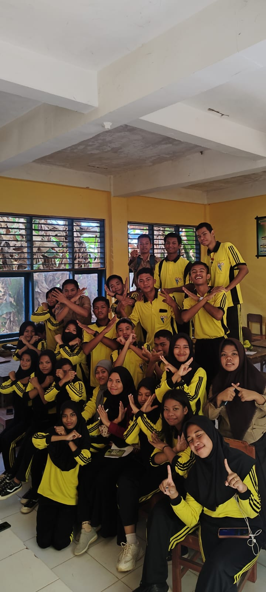
Simulasi Pemilihan
Hari Pertama Masuk Sekolah
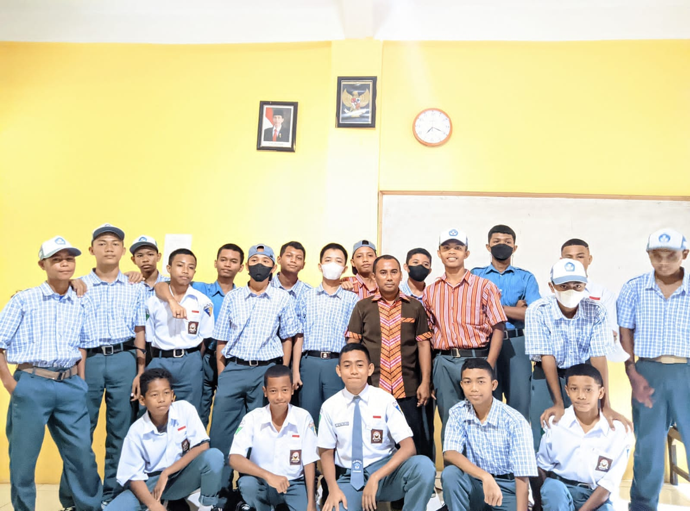
Hari Pertama Masuk Sekolah
GALERI VIDEO
Semua Foto Kenangan
Rindu Masanya
Makan Untuk Berpisah
Indahnya Awalan Itu
Rekap Setahun Terakhir
Semoga Saja Masih Sama
Rekap 2 Tahun Pertama
Starboy Liburan
Galau Ala-ala
Bonus Aib